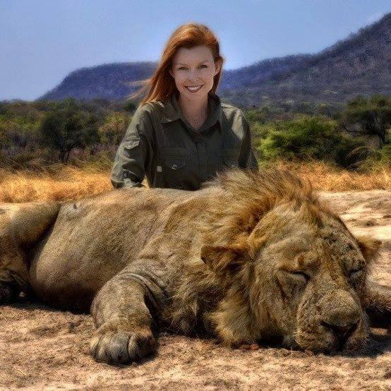
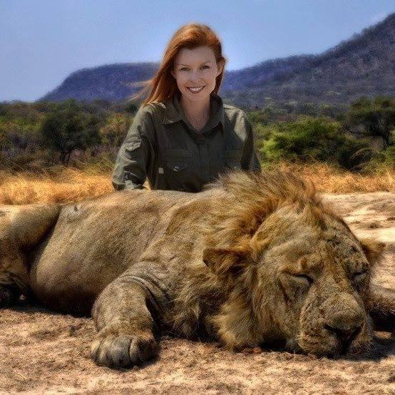

Hunting is inevitable. Without regulation animals would be hunted and poachers would be without oversight. This reality is underscored by the reality that regulatory practices require resources. Trophy hunting provides significant financial resources not only to the conservation of the world's most precious yet endangered animals, but also to local communities. In total, trophy hunting generates an estimated $200 million in revenue in rural areas of Africa, according to SCI. In Tanzania alone, Big Gam Hunting raised $75 Million for the economy. South Africa, a location with many wildlife ranches, has also seen great economic benefits through sustainable utilization of game as trophy animals.
Trophy hunting in Africa is an important contributing part of conservation. In 2008 trophy hunting raised approximately $190 Million in just seven countries. Most people don’t understand that hunting is and always will be a useful tool for conservation. Many fail to account for the strict regulations that are involved with legal hunts. When I travel to Africa to hunt, I have to pay a tag fee for the specific species I plan to take. If the game population in that country cannot sustain a hunt, hunters will not be granted a tag. The money from these tag fees goes directly to the local communities to fund anti-poaching efforts, research and other conservation initiatives.
Trophy Hunting is a Sport of Skill, Passion, Love and Conservation
Most people don't understand that hunting is and always will be a useful tool for conservation. Many fail to account for the strict regulations that are involved with legal hunts. When one travels to Africa to hunt, he has to pay a tag fee for the specific species he plans to take. If the game population in that country cannot sustain a hunt, hunters will not be granted a tag. The money from these tag fees goes directly to the local communities to fund anti-poaching efforts, research and other conservation initiatives.
Those who participate in the sport of trophy hunting have a love and respect for not only the sport and each other, but also for the game they take. Enthusiasts like hunting because of the challenge and mental strength needed to track and engage the animal. It is dangerous and difficult. Hunting is no easy feat. It takes a lot of physical strength and endurance to be a hunter. It also takes a lot of patience and skill to operate a rifle and even more to operate a bow. It's a very connected and even spiritual experience and one learns a lot from his or her self.
Many hunters are misunderstood based on the superficial nature of what is depicted in the photos. It is not unusual for hunters to take a picture with their kill. However, those pictures are a reflection of one moment, one aspect of the entire hunt, and their relationship with the process and the animal they take. After an extensive, dangerous, and often exhuasting hunt, when the individual has succeeded, there is a moment of relief and pride and that is the moment that is captured in the photograph. It is very similar to the pride displayed when individuals take photographs with the large fish they catch. Many hunters eat the meat from their kills. This practice is important to the hunter because it ensures that the death of the animal is no more senseless than that of a cow, pig, goat, lamb, or pig raised on a farm. This is not true of every hunter, but it is a true part of the culture of hunting. Below are images of hunters with their kill. Please review and enjoy the photos below with a sense of understanding of their context. See the moment for what it is, a moment, one of great pride at a big accomplishment, taken within the larger hunting process that requires skill, passion, and love, and that because of that passion and love, strongly supports conservation.
 
